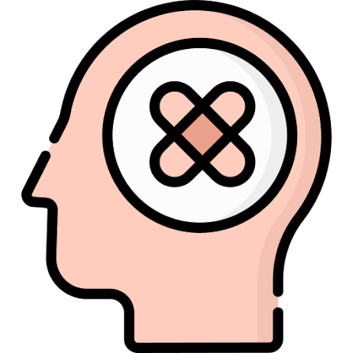
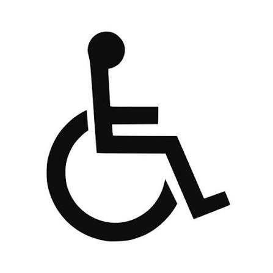
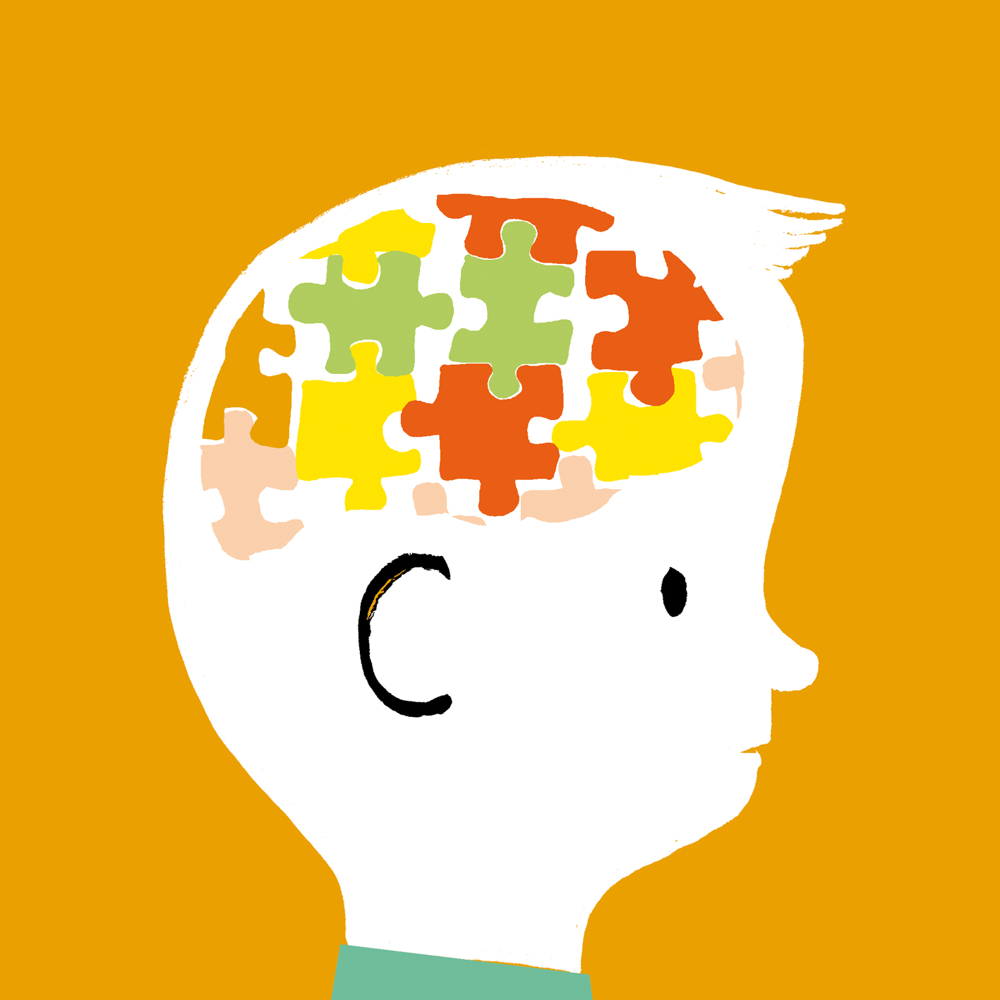

Frases capacitistas e incluyentes
Desarrollo Personal · Ingeniería de Datos e IA · Prof. Salua del Carmen Nader
3
Frases cotidianas analizadas
15%
Población mundial con discapacidad (OMS)
1 de 5
Personas neurodivergentes excluidas en TI/estudio
2006
Año de la Convención de la ONU sobre Discapacidad
Algunas frases parecen inofensivas, pero reflejan prejuicios sobre la salud mental, la movilidad y las capacidades cognitivas. Aunque hay avances en accesibilidad digital e IA incluyente, el capacitismo persiste. Hablar con respeto ayuda a que todas las personas se sientan valoradas.
Cronología de la discriminación
ANTIGÜEDAD: Se aislaba o desechaba a personas con diferencias físicas o mentales por considerarlas "defectuosas".
EDAD MEDIA: Se veía la diversidad funcional como un castigo divino o posesión demoníaca.
COLONIA / SIGLO XIX: Surgió el modelo médico: se trataba a la persona como un "enfermo" que debía ser corregido o institucionalizado.
1970: Nace el movimiento global de Vida Independiente bajo el lema "Nada sobre nosotros sin nosotros".
2006: La ONU aprueba la Convención Internacional sobre los Derechos de las Personas con Discapacidad.
2020–2026: Avances en accesibilidad digital e IA, pero persisten sesgos en algoritmos y en el lenguaje cotidiano.
Frases que discriminan y cómo decirlas mejor
POR SALUD MENTAL / NEURODIVERSIDAD
✕ "Qué bipolar estás hoy / Tan autista que eres"

MEJOR DECIR
✓ "Tienes cambios de opinión muy rápidos / Prefieres trabajar de forma independiente"
Evita usar condiciones médicas o neurodivergencias como insultos o metáforas despectivas.
POR CAPACIDAD FÍSICA O SENSORIAL
✕ "¿Estás ciego o qué? / Avanzas a paso de minusválido"

MEJOR DECIR
✓ "Revisemos bien los datos juntos / Vamos a un ritmo más constante"
Las barreras están en el entorno, no en las personas. El lenguaje respetuoso dignifica y no limita.
POR CONDESCENDENCIA (CAPACITISMO INVISIBLE)
✕ "A pesar de su condición, logró programar / Es un ejemplo de vida"

MEJOR DECIR
✓ "Es un excelente profesional y demostró gran talento en el proyecto"
No juzgues ni sobre-heroices el desempeño cotidiano. Todas las personas merecen comodidad y respeto.
De dónde vienen estas discriminaciones
Discriminación por salud mental ("Qué bipolar / Tan autista"):
Desde la antigüedad, se estigmatizó la salud mental y la neurodivergencia, asociándolas con incapacidad o inestabilidad. Aún hoy se excluye a personas por sus formas diferentes de procesar información.
Discriminación por capacidad física ("¿Estás ciego? / Paso de minusválido"):
Históricamente, el diseño de herramientas, ciudades y tecnología se pensó solo para cuerpos "estándar". Hoy persisten barreras de accesibilidad y expresiones que usan la discapacidad como falta de capacidad.
Discriminación por condescendencia ("Ejemplo de vida / A pesar de su condición"):
Surge de ver la diversidad funcional como una tragedia a superar y no como una variante natural humana. Aunque hay leyes y tecnología asistiva, persiste la lástima en el trato social.